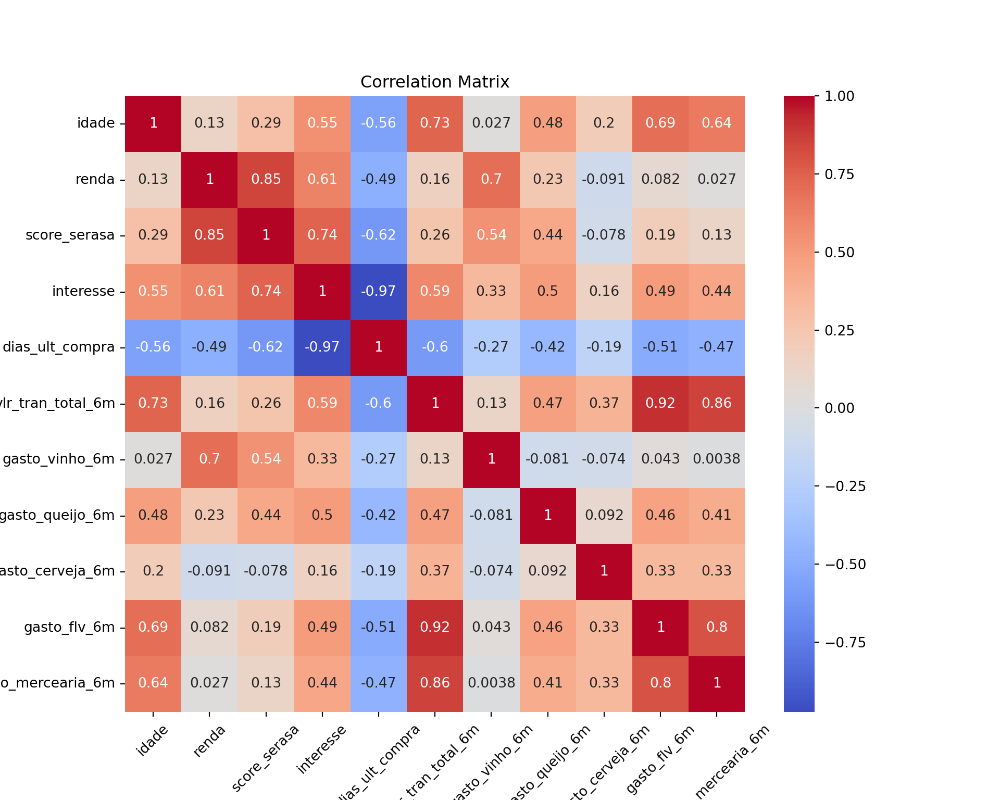
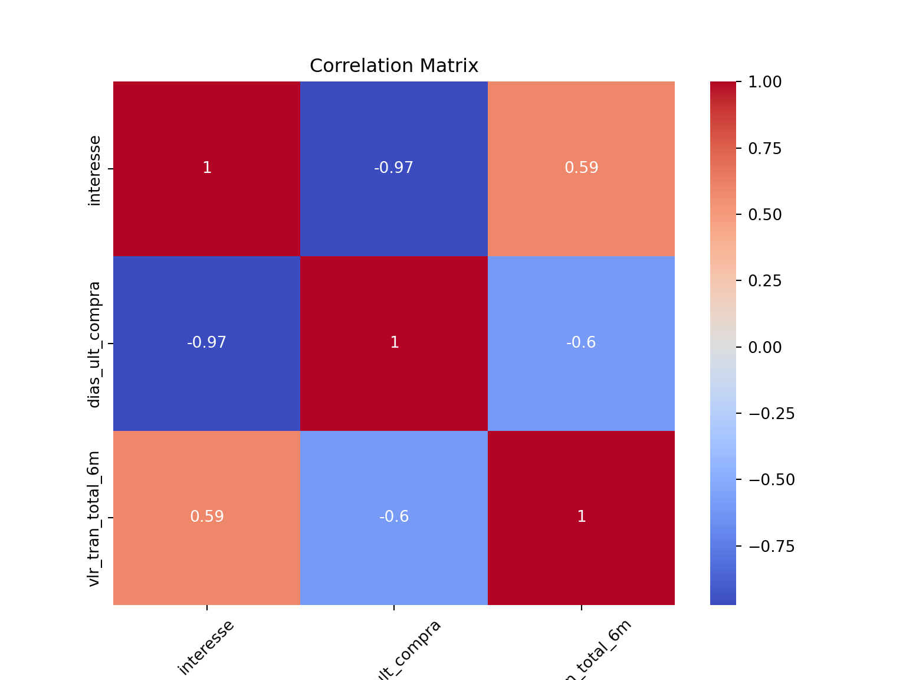
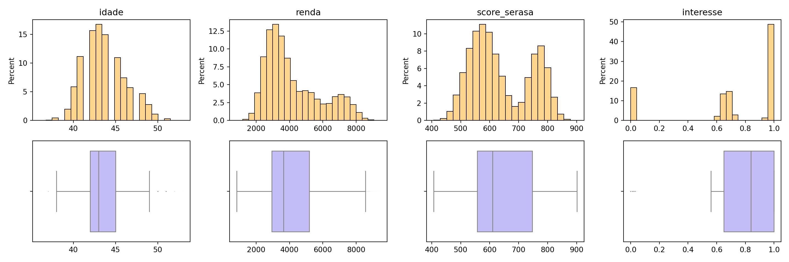
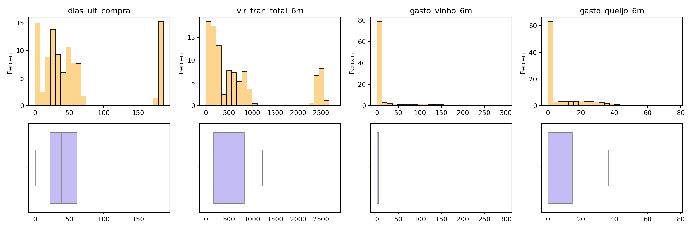
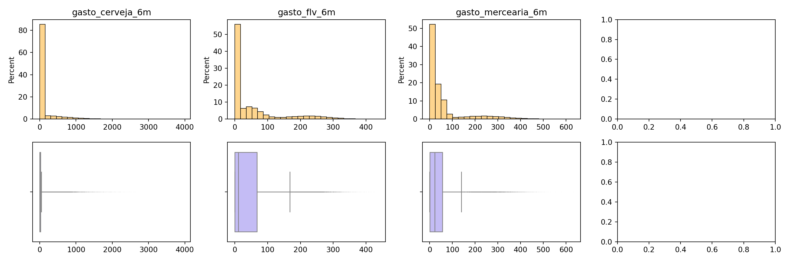
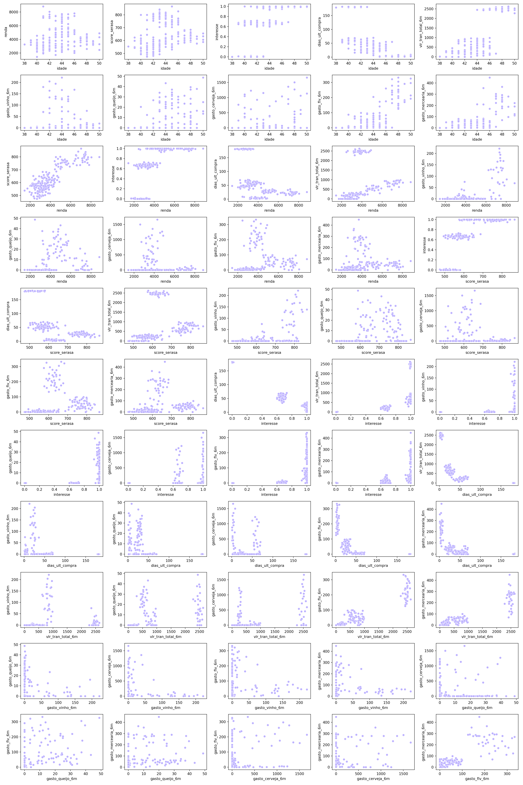

import numpy as np
import pandas as pd
# from tqdm import tqdm
from sklearn.cluster import KMeans
from sklearn.decomposition import PCA
import seaborn as sns
import matplotlib.pyplot as plt
import warnings
warnings.filterwarnings("ignore")5 Análise de agrupamento de clientes do mercado
def make_spider(df_plot, n_cols = None):
num_col = df_plot.columns.difference(["cluster"])
if n_cols == None:
n_cols = df_plot['cluster'].unique().shape[0]
df_plot[num_col] /= df_plot[num_col].max()
df_plot = df_plot.fillna(0)
palette = plt.cm.get_cmap("Set2", len(df_plot.index))
# number of variable
categories = list(df_plot)[1:]
N = len(categories)
# What will be the angle of each axis in the plot? (we divide the plot / number of variable)
angles = [n / float(N) * 2 * np.pi for n in range(N)]
angles += angles[:1]
# Initialise the spider plot
my_dpi = 96
fig, axes = plt.subplots(df_plot.shape[0] // n_cols, n_cols, figsize=(1500/my_dpi, 1500/my_dpi), dpi=my_dpi, subplot_kw={"projection" : "polar"})
axes = axes.ravel()
for idx, ax in enumerate(axes):
color = palette(idx)
row = df_plot.iloc[idx]
# If you want the first axis to be on top: a
ax.set_theta_offset(np.pi / 2)
ax.set_theta_direction(-1)
# Draw one axe per variable + add labels labels yet
ax.set_xticks(angles[:-1], categories, color='grey', size=7)
# Draw ylabels
ax.set_rlabel_position(0)
ax.set_yticks([0.33,0.66,0.99], ["0.3","0.6","1"], color="grey", size=10)
ax.set_ylim(0, 1)
# pegando valores
values = row.drop("cluster").values.flatten().tolist()
values += values[:1]
ax.plot(angles, values, color=color, linewidth=1.5, linestyle='solid')
ax.fill(angles, values, color=color, alpha=0.4)
# Add a title
ax.set_title(f"Persona {row['cluster']}", size=14, color=color, y=1.1)
plt.tight_layout()
plt.show()df = pd.read_csv("data/clientes_mercado.csv")
cols = list(df.columns)5.1 Análise Exploratória de Dados
n_linhas = df.shape[0]
print(f"The database has {n_linhas} rows.")The database has 60000 rows.print("Sample of 10 rows:")Sample of 10 rows:df.sample(10) idade renda ... gasto_flv_6m gasto_mercearia_6m
56009 44 3791.78 ... 5.97 0.00
1602 42 3198.60 ... 11.01 0.00
14488 42 4127.00 ... 10.07 43.16
43894 44 2696.87 ... 0.39 4.11
22996 39 2482.43 ... 0.00 0.60
59981 47 2910.82 ... 424.24 188.97
56375 40 3435.12 ... 0.00 0.00
24906 45 7290.95 ... 79.62 10.75
11940 44 6125.86 ... 42.84 56.08
5046 48 4245.25 ... 174.48 270.01
[10 rows x 11 columns]print("Basic descriptive statistics:")Basic descriptive statistics:df.describe(percentiles = [.01, .1, .25, .5, .75, .9, .99]) idade renda ... gasto_flv_6m gasto_mercearia_6m
count 60000.000000 60000.000000 ... 60000.000000 60000.000000
mean 43.666067 4178.643589 ... 53.939280 56.954950
std 2.499092 1651.121300 ... 82.192656 91.350726
min 36.000000 831.610000 ... 0.000000 0.000000
1% 39.000000 1866.446500 ... 0.000000 0.000000
10% 41.000000 2492.791000 ... 0.000000 0.000000
25% 42.000000 2938.817500 ... 0.720000 1.260000
50% 43.000000 3638.325000 ... 10.870000 22.715000
75% 45.000000 5187.620000 ... 67.540000 56.420000
90% 47.000000 6994.165000 ... 202.241000 204.561000
99% 50.000000 8148.202900 ... 315.900200 394.280200
max 53.000000 9435.970000 ... 436.980000 631.680000
[12 rows x 11 columns]correlation_matrix = df.corr()
plt.figure(figsize=(10, 8))
chart = sns.heatmap(correlation_matrix, annot=True, cmap="coolwarm")
chart.set_xticklabels(chart.get_xticklabels(), rotation=45)
plt.title("Correlation Matrix")
plt.show()
df.columnsIndex(['idade', 'renda', 'score_serasa', 'interesse', 'dias_ult_compra',
'vlr_tran_total_6m', 'gasto_vinho_6m', 'gasto_queijo_6m',
'gasto_cerveja_6m', 'gasto_flv_6m', 'gasto_mercearia_6m'],
dtype='str')cols_coorelation = ['interesse', 'dias_ult_compra', 'vlr_tran_total_6m']
correlation_matrix = df[cols_coorelation].corr()
plt.figure(figsize=(8, 6))
chart = sns.heatmap(correlation_matrix, annot=True, cmap="coolwarm")
chart.set_xticklabels(chart.get_xticklabels(), rotation=45)
plt.title("Correlation Matrix")
plt.show()
def divide_chunks(l, n):
for i in range(0, len(l), n):
yield l[i:i + n]
num_cols = 4
num_rows = 2
total_plots = num_cols * num_rows
l_cols = list(divide_chunks(cols, num_cols))
for sub_cols in l_cols:
fig, axes = plt.subplots(num_rows, num_cols, figsize=(15,5))
for idx, col in enumerate(sub_cols):
data = df
ax_his = axes[0, idx]
ax_box = axes[1, idx]
ax_his.set_title(f"{col}")
sns.histplot(data=data, x=col, bins = "doane", stat="percent", color="#fec868", common_norm=False, ax=ax_his)
sns.boxplot(data=data, x=col, color = "#bdb2ff", flierprops={"marker": "x", "markersize": 0.001}, ax=ax_box)
ax_his.set_xlabel("")
ax_box.set_xlabel("")
axes = axes.ravel(order = "F")
for j in range(len(sub_cols)*3, num_cols * num_rows):
axes[j].axis("off")
plt.tight_layout()
plt.show()


total_elementos = (len(cols) * (len(cols) - 1)) // 2
num_cols = 5
num_rows = int(np.ceil(total_elementos/num_cols))
fig, axes = plt.subplots(num_rows, num_cols, figsize=(20, 30))
idx_row_new, idx_col_new = 0, 0
df_sample = df.sample(200, random_state = 42)
for i, col_i in enumerate(cols):
for j, col_j in enumerate(cols):
if i < j:
ax = axes[idx_row_new, idx_col_new]
sns.scatterplot(data=df_sample, x=col_i, y=col_j, color="#bdb2ff", ax=ax)
idx_col_new += 1
if idx_col_new == (num_cols):
idx_row_new += 1
idx_col_new = 0
plt.tight_layout()
plt.show()